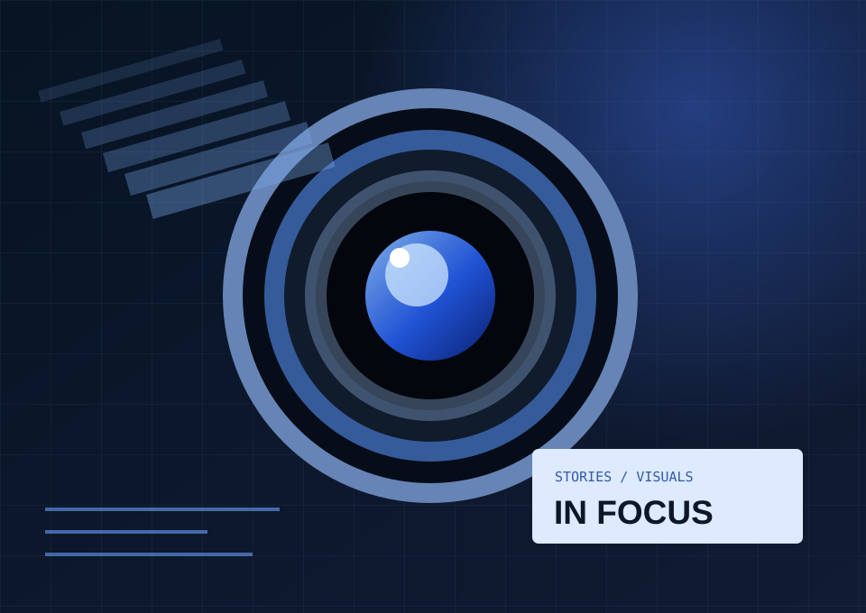

Fotografia sportowa i reportaż
Mecze, wydarzenia, Media Day, Player Matchday, fotografie zawodników, sesje casual i lifestyle.
Usługi realizowane pod marką KACPY Creative Studio. Fotografia, krótkie video, grafika i social media. Materiały dopasowane do realnego wykorzystania — od profilu zawodnika po komunikację marki.
Dobre materiały muszą działać w kontekście marki. Przygotowuję fotografie, grafiki i formaty social media z myślą o odbiorcy, formacie publikacji i celu komunikacyjnym.
Porozmawiajmy o zakresie ↗Wybierz pojedynczą usługę albo połącz kilka elementów w jeden projekt.
Mecze, wydarzenia, Media Day, Player Matchday, fotografie zawodników, sesje casual i lifestyle.
Wizerunek, kampanie marek, materiały sponsorskie, portrety i zdjęcia do stron internetowych.
Reels, TikTok, backstage, relacje, krótkie formaty promocyjne i wywiady.
Grafiki meczowe, karuzele, plakaty, bannery, materiały sponsorów, content plan i wsparcie prowadzenia kanałów.

ARTWORK / MATERIAŁ DEMONSTRACYJNYSesje reklamowe i wykorzystanie materiałów w płatnych kampaniach wymagają ustalenia zakresu licencji. Portfolio zostanie uzupełnione po wybraniu materiałów i potwierdzeniu praw do publikacji.

Nie jedna przypadkowa siatka. Portfolio przygotowałem jako galerie meczowe, wydarzenia, Player Matchday, sesje i materiały dla marek. Wkrótce pojawią się tu autentyczne zdjęcia.
Zobacz portfolio fotograficzneNapisz, z czym się mierzysz. Przygotuję propozycję zakresu i sposobu współpracy.
Napisz do mnie